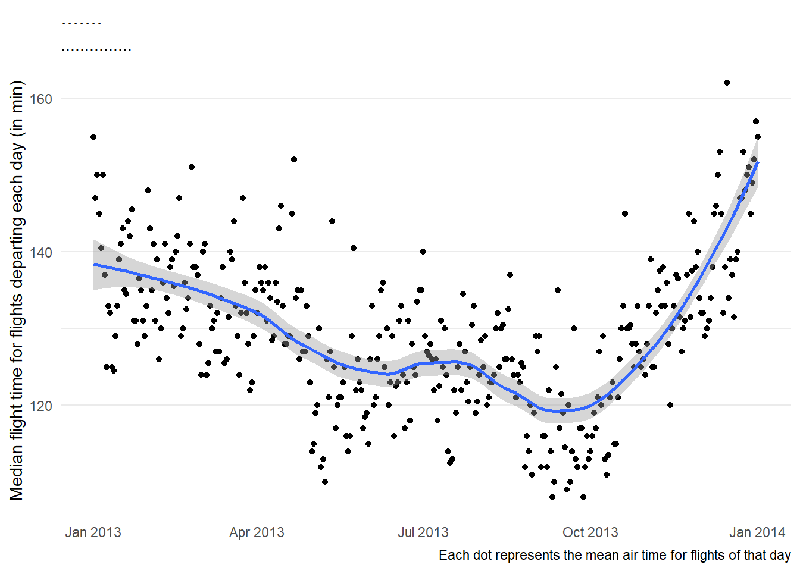
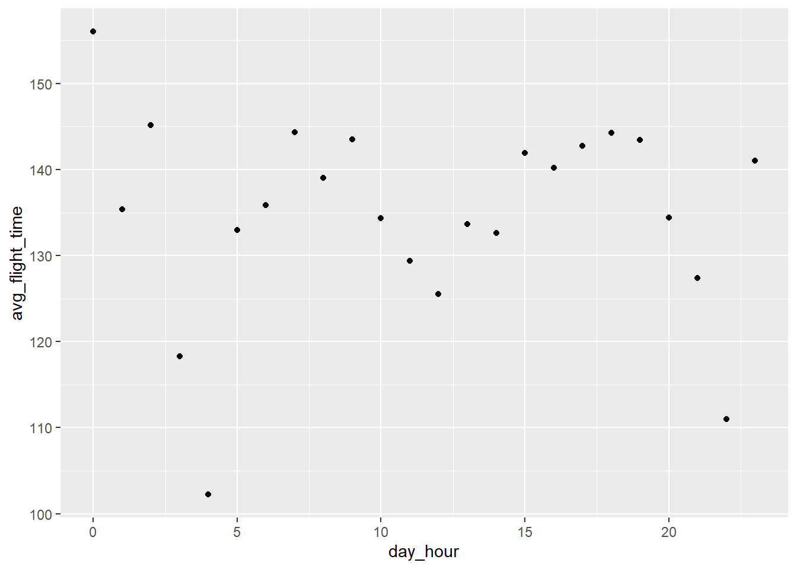

library(tidyverse)
library(nycflights13)
library(lubridate)
data("flights")Chapter 18
Dates and times
Date-Time
All date formats understood by readr
(As taken from the book R for Data Science (2e) and (Grolemund and Wickham 2011a))
| Type | Code | Meaning | Example |
|---|---|---|---|
| Year | %Y |
4 digit year | 2021 |
%y |
2 digit year | 21 | |
| Month | %m |
Number | 2 |
%b |
Abbreviated name | Feb | |
%B |
Full name | February | |
| Day | %d |
Two digits | 02 |
%e |
One or two digits | 2 | |
| Time | %H |
24-hour hour | 13 |
%I |
12-hour hour | 1 | |
%p |
AM/PM | pm | |
%M |
Minutes | 35 | |
%S |
Seconds | 45 | |
%OS |
Seconds with decimal component | 45.35 | |
%Z |
Time zone name | America/Chicago | |
%z |
Offset from UTC | +0800 | |
| Other | %. |
Skip one non-digit | : |
%* |
Skip any number of non-digits |
18.2.5 Exercises
Question 1
What happens if you parse a string that contains invalid dates?
ymd(c("2010-10-10", "bananas"))Whenever a string is parsed, that contains invalid dates, a missing value, i.e., NA will be generated.
ymd(c("2010-10-10", "bananas"))[1] "2010-10-10" NA Question 2
What does the tzone argument to today() do? Why is it important?
The tzone argument aloows us to write “a character vector specifying which time zone you would like the current time in. tzone defaults to your computer’s system timezone.”(Grolemund and Wickham 2011b)
Thus, we can find the date at the current moment in local time zone of the computer system with today() and at any other timezone, say UTC, with today(tzone = "UTC") . It is important when analyzing real-time data, or data from multiples locations across the globe, as the date may not be the same at all places at all times.
A more important role of tzone is with now() as time is different at different zones.
today()[1] "2023-09-17"today(tzone = "UTC")[1] "2023-09-17"now()[1] "2023-09-17 10:57:56 IST"now(tzone = "UTC")[1] "2023-09-17 05:27:56 UTC"Question 3
For each of the following date-times, show how you’d parse it using a readr column specification and a lubridate function.
d1 <- "January 1, 2010"
d2 <- "2015-Mar-07"
d3 <- "06-Jun-2017"
d4 <- c("August 19 (2015)", "July 1 (2015)")
d5 <- "12/30/14" # Dec 30, 2014
t1 <- "1705"
t2 <- "11:15:10.12 PM"The parsing of date and time from these values is shown below: —
d1 <- "January 1, 2010"
d2 <- "2015-Mar-07"
d3 <- "06-Jun-2017"
d4 <- c("August 19 (2015)", "July 1 (2015)")
d5 <- "12/30/14" # Dec 30, 2014
t1 <- "1705"
t2 <- "11:15:10.12 PM"
df = tibble(d1, d2, d3, d4, d5, t1, t2) |>
slice(1)
df |>
mutate(
d1 = mdy(d1),
d2 = ymd(d2),
d3 = dmy(d3),
d4 = mdy(d4),
d5 = mdy(d5),
t1 = hm(paste0(as.numeric(t1) %/% 100, ":", as.numeric(t1) %% 100)),
t2 = hms(t2)
)# A tibble: 1 × 7
d1 d2 d3 d4 d5 t1
<date> <date> <date> <date> <date> <Period>
1 2010-01-01 2015-03-07 2017-06-06 2015-08-19 2014-12-30 17H 5M 0S
# ℹ 1 more variable: t2 <Period>18.3.4 Exercises
Question 1
How does the distribution of flight times within a day change over the course of the year?
The distribution of flight times within a day change over the course of the year is displayed in Figure 1 . To check whether this is due to only some extraordinarily delayed flights, or due to longer flight times in general, we can plot the median, instead of mean, as shown in Figure 2 .
Code
flights |>
mutate(
dep_time = make_datetime(year, month, day, dep_time %/% 100, dep_time %% 100),
dep_day = round_date(dep_time, unit = "day")
) |>
group_by(dep_day) |>
summarise(mean_air_time = mean(air_time, na.rm = TRUE)) |>
ggplot(aes(x = dep_day,
y = mean_air_time)) +
geom_point() +
geom_smooth(span = 0.5) +
theme_minimal() +
labs(y = "Average flight time for flights departing each day (in min)",
x = NULL,
title = "The average flight time increases towards the winter months",
subtitle = "The lowest average flight times occur in late summer and early fall; while highest occur in December",
caption = "Each dot represents the mean air time for flights of that day") +
theme(panel.grid.major.x = element_blank(),
panel.grid.minor.x = element_blank())
Code
flights |>
mutate(
dep_time = make_datetime(year, month, day, dep_time %/% 100, dep_time %% 100),
dep_day = round_date(dep_time, unit = "day")
) |>
group_by(dep_day) |>
ggplot(aes(x = dep_day,
y = air_time,
group = dep_day)) +
geom_boxplot(na.rm = TRUE,
outlier.shape = NA) +
theme_minimal() +
labs(y = "Average flight time for flights departing each day (in min)",
x = NULL,
title = "The average flight time increases towards the winter months",
subtitle = "The lowest average flight times occur in late summer and early fall; while highest occur in December",
caption = "Each dot represents the mean air time for flights of that day") +
theme(panel.grid.major.x = element_blank(),
panel.grid.minor.x = element_blank()) +
coord_cartesian(ylim = c(100, 200))
flights |>
mutate(
dep_time = make_datetime(year, month, day, dep_time %/% 100, dep_time %% 100),
dep_day = round_date(dep_time, unit = "day")
) |>
group_by(dep_day) |>
summarise(median_air_time = median(air_time, na.rm = TRUE)) |>
ggplot(aes(x = dep_day,
y = median_air_time)) +
geom_point() +
geom_smooth(span = 0.5) +
theme_minimal() +
labs(y = "Median flight time for flights departing each day (in min)",
x = NULL,
title = ".......",
subtitle = "...............",
caption = "Each dot represents the mean air time for flights of that day") +
theme(panel.grid.major.x = element_blank(),
panel.grid.minor.x = element_blank())
f1 = flights |>
select(-hour, -minute, -time_hour) |>
filter(!is.na(dep_time) & !is.na(arr_time) & !is.na(air_time)) |>
mutate(
dep_time = make_datetime(year, month, day, dep_time %/% 100, dep_time %% 100),
sched_dep_time = make_datetime(year, month, day, sched_dep_time %/% 100, sched_dep_time %% 100),
arr_time = make_datetime(year, month, day, arr_time %/% 100, arr_time %% 100),
sched_arr_time = make_datetime(year, month, day, sched_arr_time %/% 100, sched_arr_time %% 100),
## If arrival time is earlier than departure time, add one day to the arrival time
arr_time = if_else(arr_time < dep_time,
true = arr_time + days(1),
false = arr_time),
flight_time = arr_time - dep_time,
.keep = "unused"
)
###########
flights |>
filter(dest == "HNL")# A tibble: 707 × 19
year month day dep_time sched_dep_time dep_delay arr_time sched_arr_time
<int> <int> <int> <int> <int> <dbl> <int> <int>
1 2013 1 1 857 900 -3 1516 1530
2 2013 1 1 1344 1344 0 2005 1944
3 2013 1 2 909 900 9 1525 1530
4 2013 1 2 1344 1344 0 1940 1944
5 2013 1 3 914 900 14 1504 1530
6 2013 1 3 1418 1341 37 2006 1935
7 2013 1 4 900 900 0 1516 1530
8 2013 1 4 1343 1341 2 1932 1935
9 2013 1 5 858 900 -2 1519 1530
10 2013 1 5 1329 1335 -6 1850 1935
# ℹ 697 more rows
# ℹ 11 more variables: arr_delay <dbl>, carrier <chr>, flight <int>,
# tailnum <chr>, origin <chr>, dest <chr>, air_time <dbl>, distance <dbl>,
# hour <dbl>, minute <dbl>, time_hour <dttm>###########
f1 |>
filter(flight_time > 6*60)# A tibble: 106 × 14
dep_time sched_dep_time dep_delay arr_time
<dttm> <dttm> <dbl> <dttm>
1 2013-01-01 08:57:00 2013-01-01 09:00:00 -3 2013-01-01 15:16:00
2 2013-01-01 13:44:00 2013-01-01 13:44:00 0 2013-01-01 20:05:00
3 2013-01-02 09:09:00 2013-01-02 09:00:00 9 2013-01-02 15:25:00
4 2013-01-04 09:00:00 2013-01-04 09:00:00 0 2013-01-04 15:16:00
5 2013-01-05 08:58:00 2013-01-05 09:00:00 -2 2013-01-05 15:19:00
6 2013-01-08 09:01:00 2013-01-08 09:00:00 1 2013-01-08 15:04:00
7 2013-01-08 13:44:00 2013-01-08 13:41:00 3 2013-01-08 19:51:00
8 2013-01-09 06:41:00 2013-01-09 09:00:00 1301 2013-01-09 12:42:00
9 2013-01-09 13:40:00 2013-01-09 13:41:00 -1 2013-01-09 20:19:00
10 2013-01-13 08:56:00 2013-01-13 09:00:00 -4 2013-01-13 15:23:00
# ℹ 96 more rows
# ℹ 10 more variables: sched_arr_time <dttm>, arr_delay <dbl>, carrier <chr>,
# flight <int>, tailnum <chr>, origin <chr>, dest <chr>, air_time <dbl>,
# distance <dbl>, flight_time <drtn>f1 |>
mutate(day_hour = hour(dep_time)) |>
group_by(day_hour) |>
summarize(avg_flight_time = mean(flight_time, na.rm = TRUE)) |>
ggplot(aes(x = day_hour,
y = avg_flight_time)) +
geom_point()
Question 2
Compare dep_time, sched_dep_time and dep_delay. Are they consistent? Explain your findings.
Question 3
Compare air_time with the duration between the departure and arrival. Explain your findings. (Hint: consider the location of the airport.)
Question 4
How does the average delay time change over the course of a day? Should you use dep_time or sched_dep_time? Why?
Question 5
On what day of the week should you leave if you want to minimise the chance of a delay?
Question 6
What makes the distribution of diamonds$carat and flights$sched_dep_time similar?
Question 7
Confirm our hypothesis that the early departures of flights in minutes 20-30 and 50-60 are caused by scheduled flights that leave early. Hint: create a binary variable that tells you whether or not a flight was delayed.
References
Grolemund, Garrett, and Hadley Wickham. 2011a. “Dates and Times Made Easy with Lubridate” 40. https://www.jstatsoft.org/v40/i03/.
———. 2011b. “Dates and Times Made Easy with Lubridate” 40. https://www.jstatsoft.org/v40/i03/.